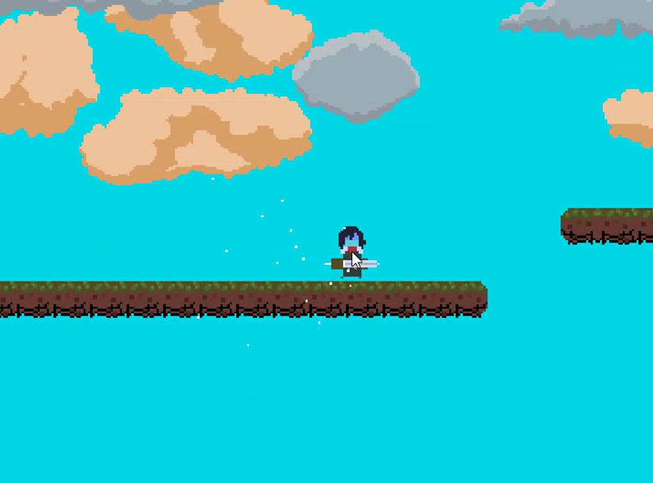
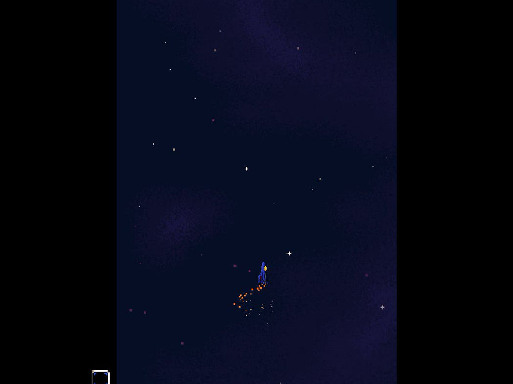
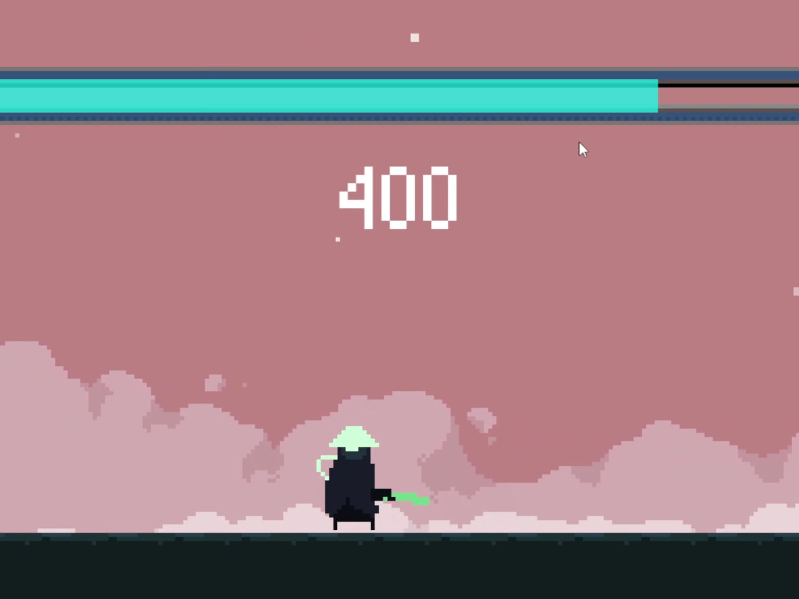
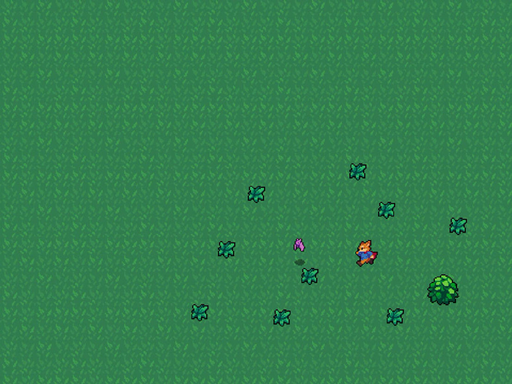
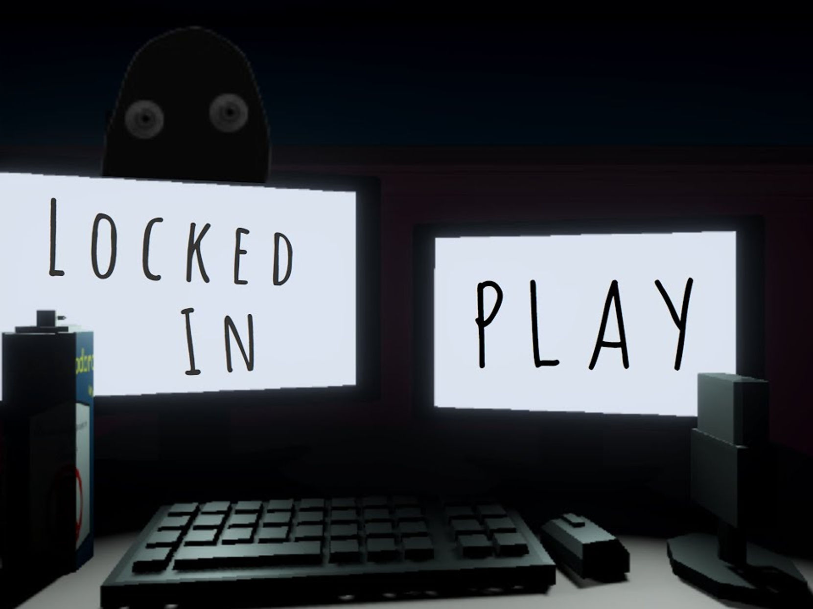
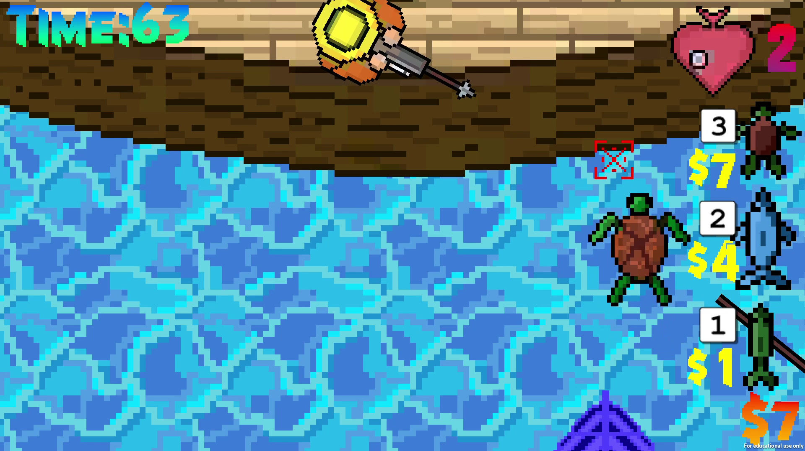

For the last five years, I've experimented with different aspects of making video games. Every week, I meet with my Game U instructor for guidance. I've worked on everything from art to coding and design in these games.
All of the projects below are made using Godot.

The most complete project I've made in Godot: a short platformer built to showcase movement, animations, and combat mechanics like attacking and parrying. This was also the first game I made all of the art for, kept simple and functional on purpose. I designed the mechanics and worked on the programming with my Game U instructor.

A simple bullet hell game, unfinished at the moment. The assets aren't mine — I got them from an external source. I did the design and worked on the programming with my Game U instructor.

A high score-based, endless 2D combat game where you fight to survive as long as possible against waves of enemies. One of the first major projects I made in Godot, pulling together everything I'd learned from smaller projects — hitboxes, collision checking, programming, and the animation player. I worked on the coding with my Game U instructor; the art isn't mine.

A short demo built to test and learn top-down movement, combat, and environments in Godot.

A game I worked on with a couple of friends. They did most of the coding and modeling while I worked on some of the art, textures, and sound design.

A two-player game where the fisherman tries to defend against the fish player by shooting at them. The fish player has to get one of the fish across the screen three times to win; the fisherman has to stop that from happening.
This was a student team project made at the Game Academy program at Champlain College — the team worked intensively over one week using Unity. Most of the team was more comfortable with programming, so I took on the art and animations instead: the fisherman, the ocean, and the fish. I started with simple, clean outlines and a few colors per sprite, then added shading, which made a big difference for relatively little extra work.